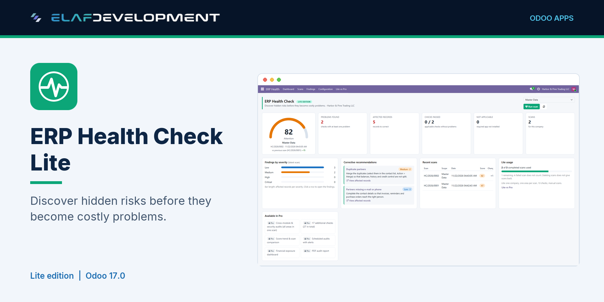
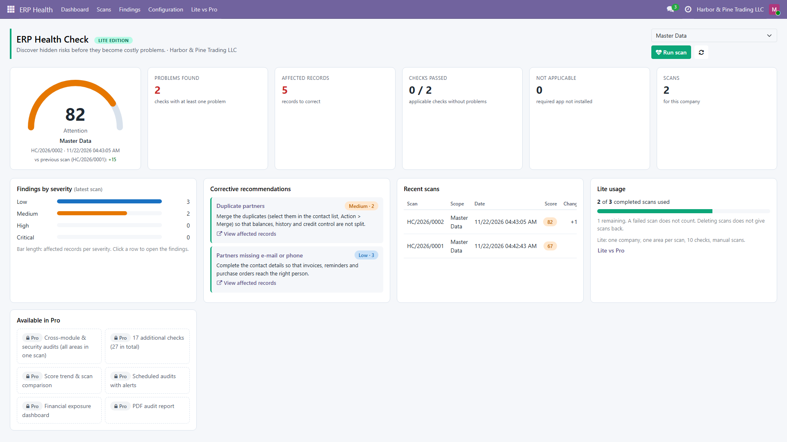
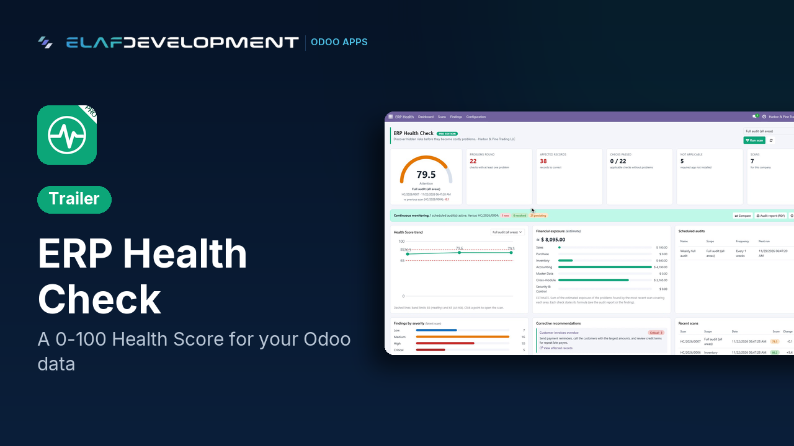
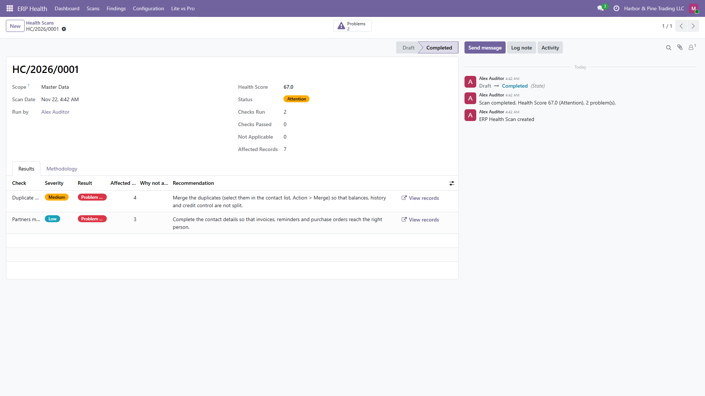
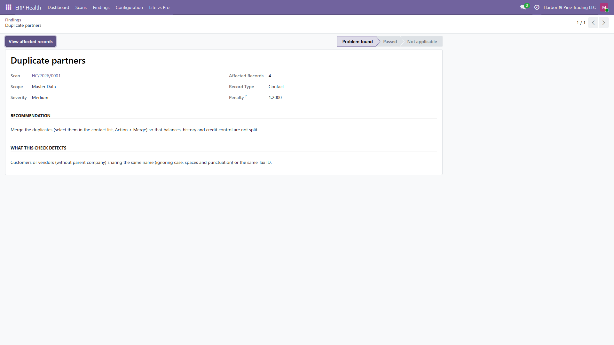
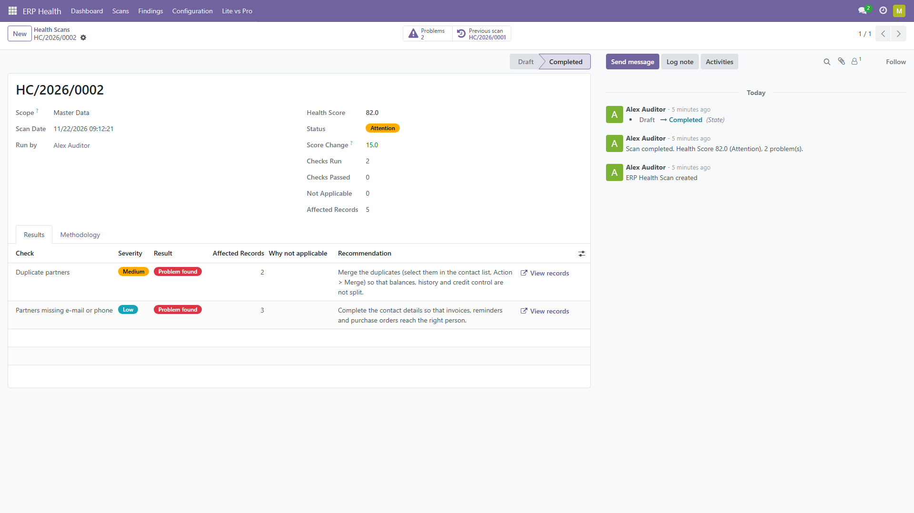
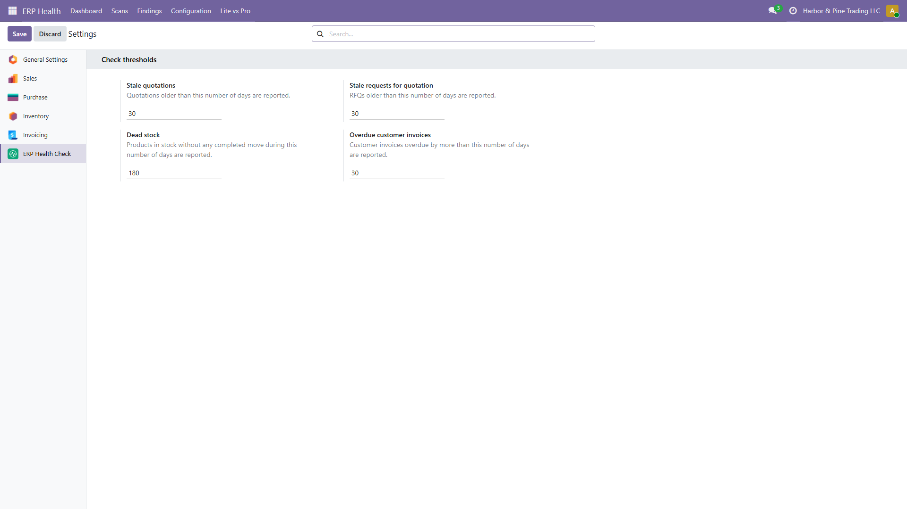
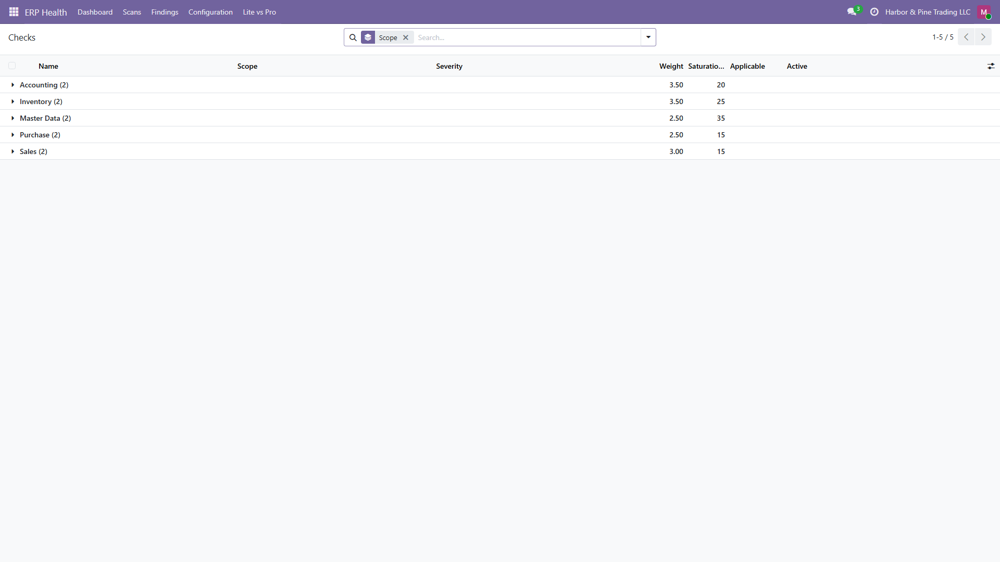
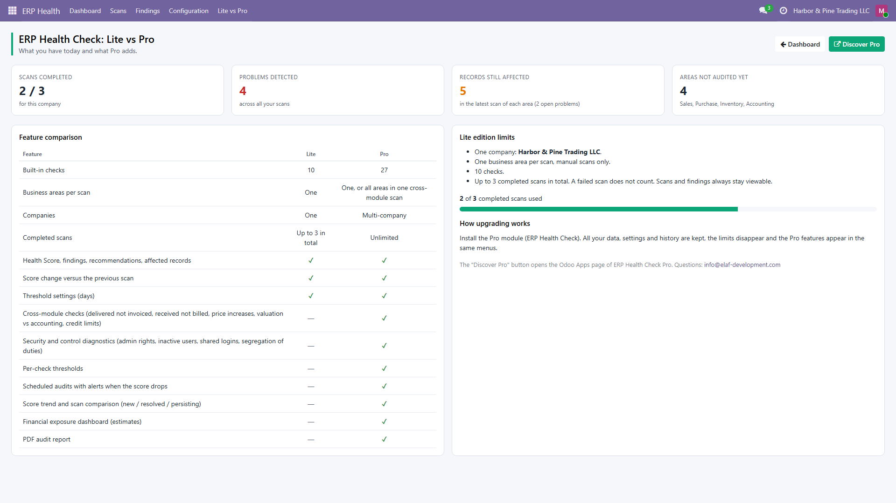

LITE EDITION
Scan one business area of your Odoo database for hidden data and process risks, get a 0-100 Health Score, corrective recommendations and one-click access to the affected records.
Works on your real records 10 built-in checks Health Score 0-100 English and Arabic1
Stale quotations, late receipts, negative stock, overdue invoices, duplicate partners and more, found in your own data.
2
A 0-100 Health Score with Healthy, Attention and At risk bands, and the change versus the previous scan of the same area.
3
Each finding has a recommendation and opens the affected records, with your normal access rights.

Health dashboard: score gauge, findings by severity, corrective recommendations and recent scans

Product video: ERP Health Check (the video shows the Pro edition; Lite features and limits are listed on this page) (opens on YouTube)
Choose one business module (Sales, Purchase, Inventory, Accounting or Master Data) and run its checks on your real records. Lite audits that one module; it cannot be changed in Lite.
Stale quotations, sales below cost, late receipts, stale RFQs, negative stock, dead stock, overdue customer invoices, overdue vendor bills, duplicate partners, partners without e-mail or phone.
Each finding shows its severity, the number of affected records and a recommendation. View affected records opens them with your own access rights.
Weighted by check weight and severity, saturating at a per-check count. Bands: Healthy 85 and above, Attention 65 to 84, At risk below 65. The formula is shown on the scan.
After fixing data, run the area again to see the score change versus its previous scan.
Days for stale quotations, stale RFQs, dead stock and overdue customer invoices are set in Settings.
A check that needs an application you have not installed is reported as not applicable, explains which module it needs, and is left out of the score.
This free edition is fully functional within the limits below. Please review them before installing.

Completed scan of one business area with its findings

Finding with its recommendation and the button to open the affected records

Score change versus the previous scan of the same area

Check thresholds in days

Built-in checks grouped by business area, with applicability

Lite vs Pro page with the Lite scan counter
Scan Accounting to list overdue invoices and bills before closing the month.
Scan Master Data, fix duplicates and missing contact details, rescan and see the score rise.
| Capability | Lite (free) | Pro |
|---|---|---|
| Health Score with findings and affected records | ✓ | ✓ |
| Cross-module checks (delivered not invoiced, received not billed and others) | — | ✓ |
| Security and control diagnostics | — | ✓ |
| Per-check threshold overrides | — | ✓ |
| Scheduled audits with score-drop alerts | — | ✓ |
| Score trend and scan comparison (new, resolved, persisting) | — | ✓ |
| Financial exposure dashboard (estimates) | — | ✓ |
| PDF audit report | — | ✓ |
| Companies | One company per database (the first company that completes a scan) | Multi-company |
| Audited business module | One business module, set by the first completed scan or chosen once by a manager in Settings. It cannot be changed in Lite. | Every module: one area, Cross-module, Security and Control, or a full audit of all areas |
| Checks | 10 checks | 27 checks |
| Completed scans | Up to 3 completed scans in total. A scan that is refused (no runnable check, missing access rights), cancelled, fails or is a duplicate click does not count; deleting scans does not give them back. After that, all scans and findings remain viewable. | No cap |
| Scheduling | Manual scans only | Scheduled audits |
A Pro edition is available. It is installed on top of Lite and keeps all Lite data, settings and history.
| Supported Odoo versions | 17.0 |
|---|---|
| Other Odoo versions | Odoo 18.0 and 19.0 are distributed as separate packages. |
| Community / Enterprise | Odoo 17.0 Community Edition (tested). Enterprise Edition has not been tested. |
| Hosting | On-premise and Odoo.sh. Not available on Odoo Online, which does not run third-party Python modules. |
| Dependencies | Base, Discuss, product (product) |
| License | LGPL-3 |
No. Scans only read business records and store their results in the scan and its findings.
Only Odoo's base, Discuss and Product modules. Each check runs when the application it needs is installed.
No. Lite audits one business module, set by the first completed scan or chosen once by a manager in Settings. ERP Health Check Pro audits every module.
A Lite scan always audits the whole module. If a check of the module needs access you do not have (for example accounting), or no check can run, the scan is refused before it runs, the missing access is named, and nothing is counted.
All scans and findings stay available. The Run scan button then opens the Lite vs Pro page.
The user and administrator guide is available in the Documentation tab of this listing.
Community support, best effort. Contact: info@elaf-development.com
ERP Health Check Lite 17.0.1.1.0, released 2026-11-22
Initial release for Odoo 17.0.